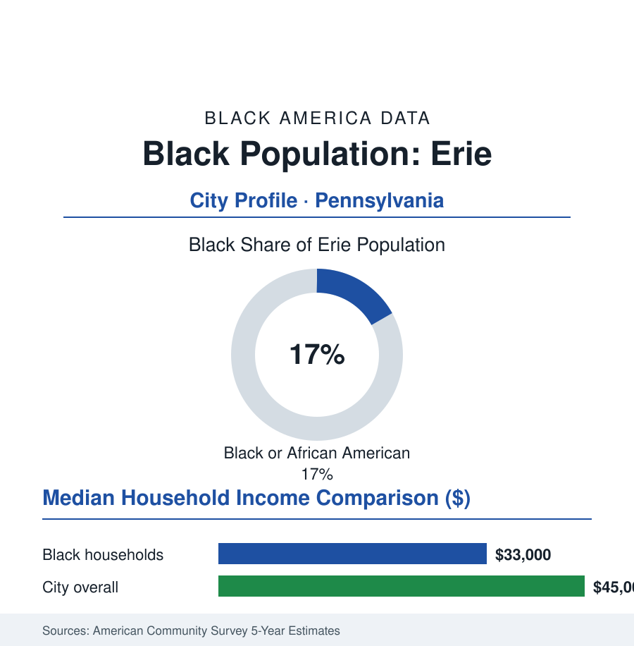

Black Cities
Black Erie: 16,000 People on the Lake
Erie's Black community, about 16,000 and 17% of Pennsylvania's lakefront city, was built by the lake trade and the plants — and holds the city's east side through its reinvention.

Erie's Black community numbers approximately 16,000 people — about 17% of Pennsylvania's only lakefront city, 95,000 residents — built first by the lake's maritime and railroad economy, then by the manufacturing century (the locomotive works and the foundries), and concentrated on the city's east side, where its churches, its United Way-era institutions, and its political organization carry a community the snowbelt's economics have pressed for fifty years. This profile reads the lake city's numbers.
From the Docks to the Locomotive Works
Erie's Black presence runs to the city's beginnings in the lake trade (the port's sailors, cooks, and dockworkers in the nineteenth-century record — the Great Lakes' maritime Black workforce a documented world of its own) and the abolition era (Erie's Underground Railroad stations moving freedom seekers the last miles to the lake and Canada — the county's Black churches part of the network's infrastructure). Industrialization built the modern community: GE Transportation's Erie works (the locomotive plant among the world's largest — its workforce in the thousands across the century, Black machinists and laborers through the union era, the plant's 2010s contraction and the Wabtec transition the current file) and the foundry, plastics, and paper trades around it drew Southern migrants in the standard waves into the east-side neighborhoods — the parade-street districts of the historical record, with the community's church row and its business strips on Parade and State's edges. The postwar data tell the regional story: the city's population sliding from 140,000 toward 95,000 across the industrial decades, the Black share rising through all of it as the community's roots held.
Institutions and the East Side
The institutional map is compact and complete: Black Erie's church tradition (congregations of citywide standing, the east side's ministerial alliances woven through the city's civic fabric), the Martin Luther King Center and the neighborhood centers of the community-services tier, the Booker T. Washington Center's century of service in the record, a Black political establishment seated on city council and the school board (in a district roughly a third Black and Latino, its governance contests substantially the community's), and Gannon University and Mercyhurst in the city (with Penn State Behrend on the metro's edge) as the higher-education tier — Gannon's downtown campus an anchor of the center-city reinvestment map. The refugee-resettlement layer rewrote part of the community's recent data: Erie among the nation's notable resettlement cities (its African arrivals — Congolese, Sudanese, Somali families in the census's foreign-born counts — settling substantially on the east side beside the historic community, the schools' language data and the churches' new congregations registering the Black Erie's second founding inside the first).
The cultural record carries its own institutions: the city's Juneteenth celebration (among the region's established observances, drawing the county to Perry Square), the gospel tradition of the east-side churches (the anniversary concerts and choir federations of the local record), the Black exposition and heritage programming of the historical societies' recent decades, and the school district's own Black history curriculum work — the small-city cultural infrastructure, complete at small-city scale, that the neighboring profiles in this section describe for metros ten times Erie's size.
The Economic Ledger
The ACS data are snowbelt-hard: Black median household income in the low-to-mid thirty-thousands against a city median in the mid-forty-thousands; poverty concentrated on the east side in the tract maps; homeownership in the middle ranges (the east side's stock of older singles and doubles, its values modest even by Rust Belt standards — the ownership-without-appreciation pattern of the Youngstown file). The workforce in the current record: the health systems (UPMC Hamot and Saint Vincent — the city's largest employers), education and the public sector, the plastics and machining remnant (Erie's tool-and-die and injection-molding cluster a genuine niche in the trade data), insurance (Erie Insurance — the Fortune-tier hometown company, its downtown campus the center's largest private employer), and the lakefront's tourism build-out (the Bayfront's hotels and convention trade). The reinvestment geography — the Bayfront and downtown's decade of projects, the East Side Renaissance planning in the city's documents — distributes against the neighborhood data in the familiar argument, with the community's development organizations contesting the east side's share tract by tract.
Reading Erie's Numbers
Seventeen percent of a lake city, twice-founded — by the migration and by the resettlement planes — with its institutions holding the east side through fifty years of snowbelt economics: Erie is the atlas's portrait of the small industrial city's Black community at full civic maturity, its next chapter being written in two accents of the same language of arrival. The lake brought both. The census counts them together now.
More in Black Cities
Black Atlanta: Population, Distribution, and Growth of a Black Metropolis
Metro Atlanta holds more than two million Black residents — roughly one in three, second only to New York. The suburban distribution, migration history, and composition of Black Atlanta in the census data.
Black New York: The Largest Black Population in America
The New York metropolitan area holds about 3.4 million Black residents — more than any metro in the nation — and the city itself about two million. The census profile.
Black Washington: The District and the Metro
The Washington metro holds about 1.6 million Black residents, and the District itself — long a majority-Black city — now records a Black share near 41 percent. The census profile.
Source: U.S. Census Bureau, 2020 Census and American Community Survey 5-year estimates; City of Erie; Erie County historical and Gannon University records.